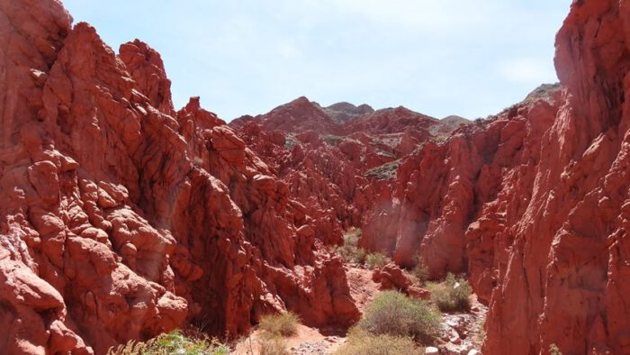
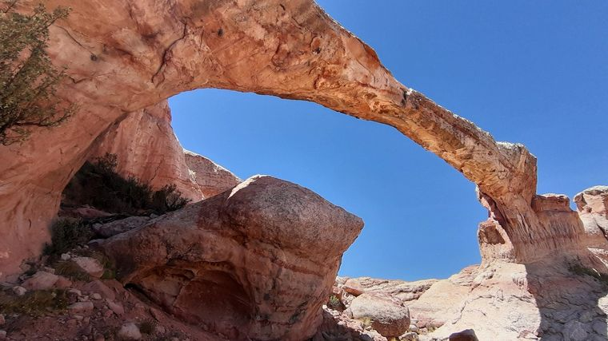
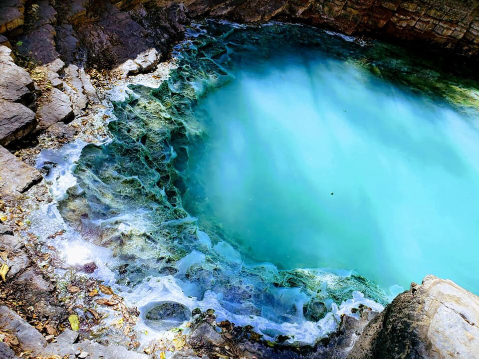

1:Parque Provincial Potrero de Yala

El Parque Potrero de Yala es la primera área protegida de la provincia de Jujuy. Protege las Yungas, en especial el Bosque Montano (entre 1500-3000 m.s.n.m) y Pastizal de neblina (más de 3000 m.s.n.m). Es reserva núcleo de la Reserva de Biosfera de las Yungas. Es muy rica por su biodiversidad es hábitat del venado andino (Hippocamelus antisensis), del cóndor andinos, entre otras. Es un área de importancia para la conservación de las aves (AICA), más de 200 aves. También es declarada área de importancia para la conservación de los murciélagos (AICOM), 16 especies diferentes. Por su gran riqueza natural, es visitada por especialistas, estudiantes de todos los niveles y la comunidad en general. Mantener en un buen estado de conservación nos permite disfrutar de sus servicios ecosistémicos y aportar a la lucha del cambio climático.
2:La quebrada de las Señoritas

La Quebrada de las Señoritas, están ubicadas en Uquía, un pintoresco y pequeño pueblo de la Quebrada de Humahuaca sobre la Ruta 9, y a 2.900 m.s.n.m.
Se trata de un recorrido de gran color para disfrutar a pie que tiene una antigüedad que varía entre el millón y los tres millones de años, conformadas además por cavernas y grietas tectónicas.
3:Puente del Diablo

El Puente del Diablo se encuentra en Tres Cruces, antes de llegar a Abra Pampa, está ubicado sobre el Cerro del Espinazo del Diablo a unos 4000 m.s.n.m. Se puede apreciarlo desde la Ruta N°9, desde allí hasta el puente se debe realizar aproximadamente entre 4 y 6 horas de caminata dependiendo la intensidad.
4:Termas de Jordán

Las Termas del Jordán se encuentran a 8 kilómetros de la localidad de San Francisco de Asís, junto al Parque Nacional Calilegua, en el departamento Valle Grande, en medio de las yungas jujeñas. Están a 165 kilómetros de San Salvador de Jujuy, la capital de la provincia.
Se puede llegar a este destino desde San Francisco de Asís caminando o a caballo, siempre con guía habilitado.
Es un circuito de unos 16 kilómetros ida y vuelta, de dificultad media-alta, que se hace en total en unas 7 horas a pie.
5:Salinas Grandes

Las Salinas Grandes son uno de los lugares más impactantes de Salta y de Jujuy y un imprescindible para conocer en cualquier viaje por el norte argentino. Están a una altura de 3.450 metros sobre el nivel del mar y, por cuestiones visuales y de clima, son más atractivas del lado jujeño.
Como otros paisajes típicos de la región de la Puna, este mar salino parece salido de otro planeta. Tiene 212 km² de superficie: kilómetros y kilómetros de llanura de un blanco uniforme, que sólo se ve interrumpido por algunos piletones con agua celeste.